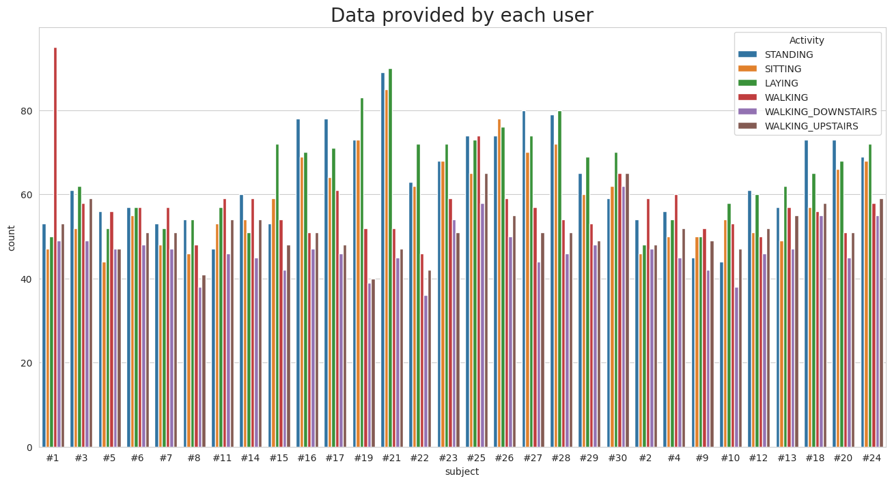
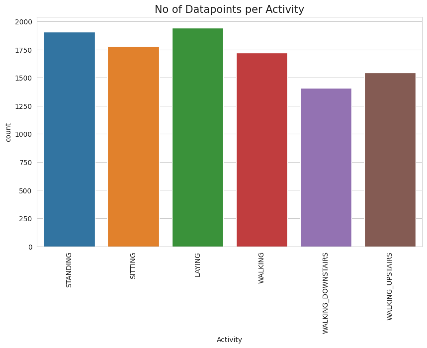
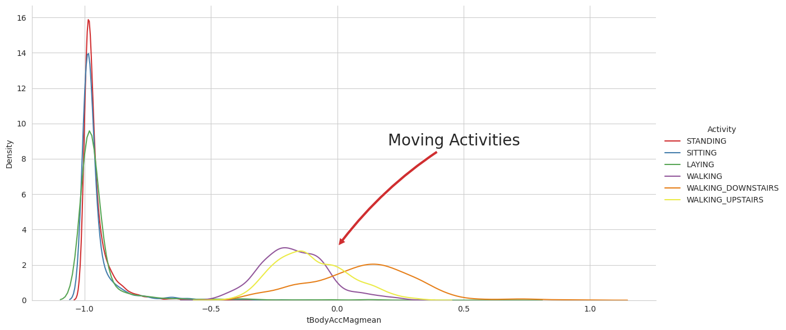
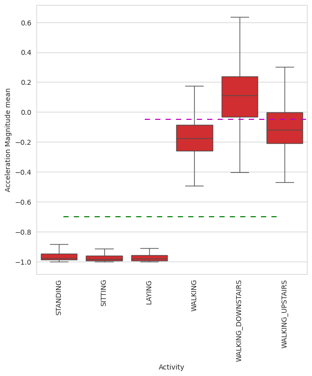
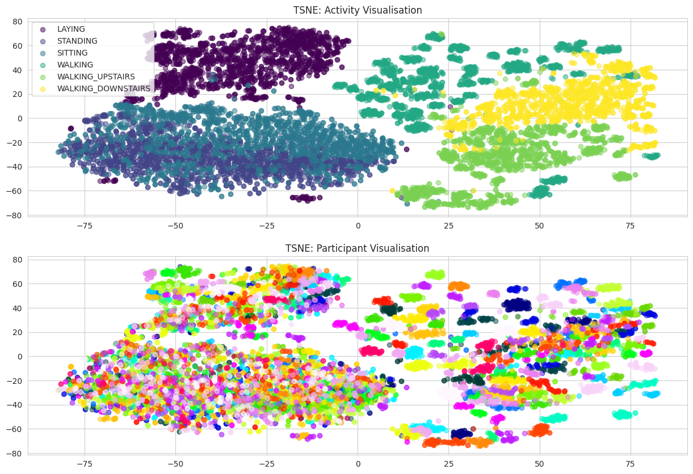
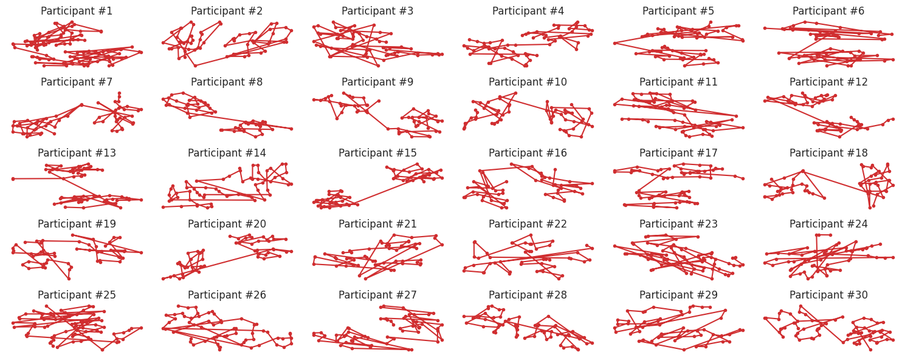
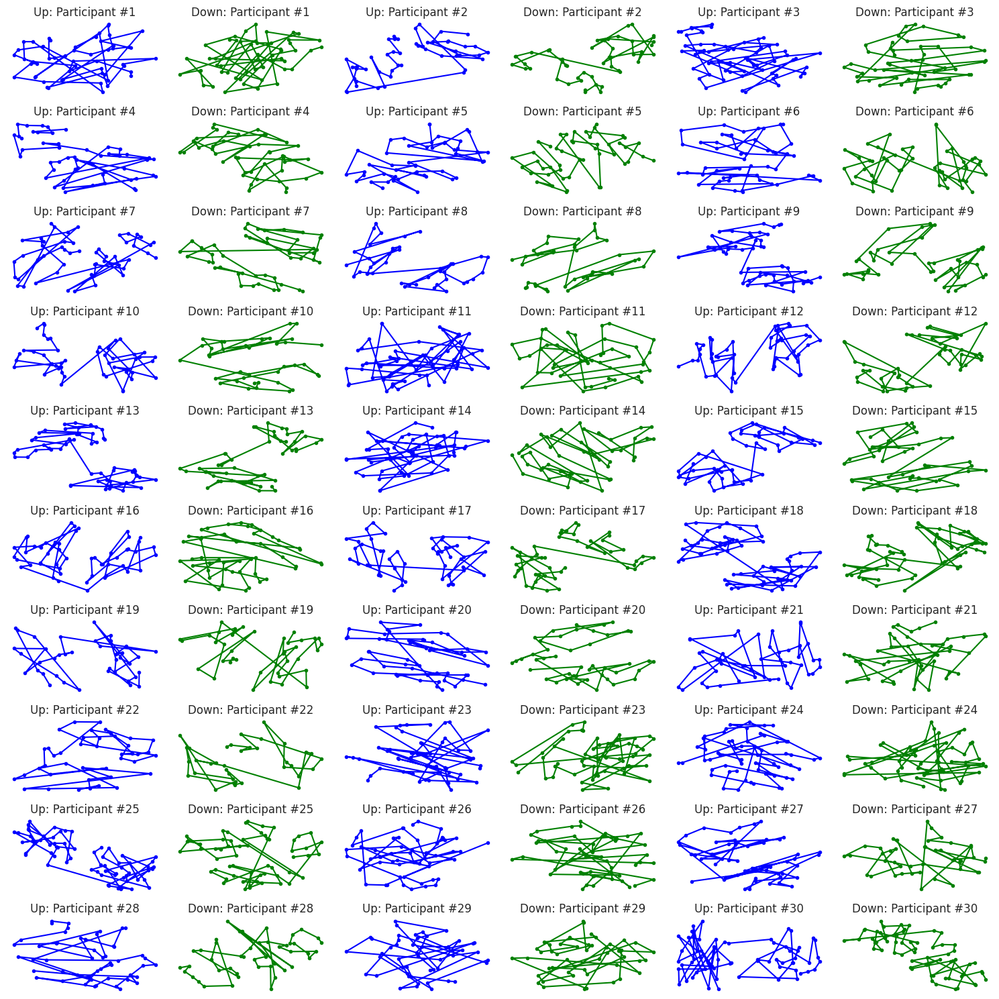
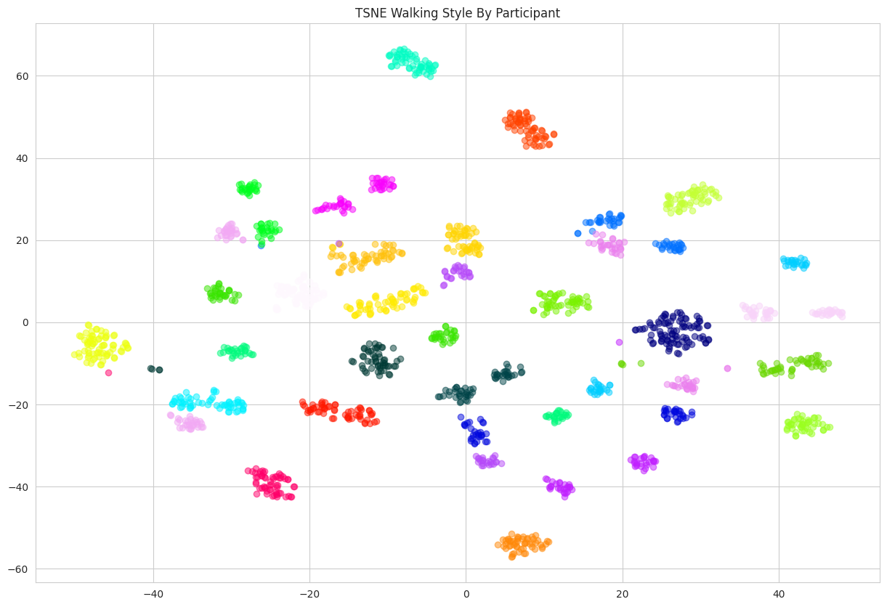

30 Participants, 6 Activities - How evenly is the data spread?
The grouped bar chart shows the number of observations contributed by each participant for each activity. Contributions are broadly comparable, although some participant–activity combinations have noticeably fewer observations than others. This gives us a reasonably distributed dataset without perfect uniformity.

Lying down dominates the dataset; walking downstairs comes last.
The chart shows that lying down and standing have the most observations, while walking downstairs has the fewest. The classes are reasonably represented but not perfectly balanced, which is worth considering when interpreting overall classification accuracy.

Stillness leaves a sharper fingerprint than movement.
The density plot compares mean body-acceleration magnitude across the six activities. Stationary activities form sharp, overlapping peaks near −1, whereas dynamic activities have broader distributions extending towards higher values. This suggests that acceleration magnitude is effective at distinguishing stillness from movement, but less effective at separating individual walking activities.

One feature separates standing still from moving — but not every type of movement.
The box plot highlights the difference between stationary and dynamic activities, with walking downstairs exhibiting a higher median acceleration-magnitude feature than the stationary classes. The dashed thresholds illustrate potential separation boundaries, but the overlapping distributions show why a simple rule cannot classify every activity correctly.

Activities form islands; participant identities are less cleanly separated.
The upper panel shows that the six activities form distinguishable regions, particularly for lying down and the walking-related classes, although sitting and standing overlap substantially. The lower panel colours the same observations by participant and shows much more mixing, suggesting that activity is more clearly separated in this projection than participant identity.

Thirty walkers, thirty movement maps.
The grid shows a separate t-SNE projection of walking observations for each participant, revealing varied patterns in cluster shape, spread and arrangement. These differences motivate the hypothesis that walking contains participant-specific information. However, every participant is embedded separately, so the shapes cannot be directly compared as if they shared a common coordinate system.

Changing the direction of walking changes the movement pattern.
The grid compares the t-SNE projections for walking upstairs and downstairs across all 30 participants. The resulting patterns vary across participants and between the two activities, suggesting that stair climbing provides another useful perspective on movement characteristics. Because the embeddings are computed separately, visual differences alone cannot establish how reliably a participant's identity persists across both activities.

Walking leaves participant-associated fingerprints.
Unlike the individual plots, this visualization places walking observations from all participants in one shared embedding. Many observations form compact, participant-associated clusters, although some participants occupy multiple separated regions and some regions overlap. This is the most relevant visualization for the participant-identification experiment and complements the high walking-based LightGBM accuracy.
Anomalies, observations and patterns
- Anomaly: An analytical anomaly occurs between the SITTING and STANDING activities. Although they are structurally distinct physical states, their inertial sensor profiles (especially acceleration magnitudes) overlap heavily.
- Anomaly: Even static activities can identify a person to some extent. Accuracy is 51–65%, which is about 15–20 times better than random guessing across 30 people (3.3%).
- Observation: The data is clean: 10,299 windows, 561 features, 30 subjects and 6 activities, with no nulls or duplicates.
- Observation: The model needs only about 60–83 seconds of data per person per activity.
- Pattern: Movement reveals identity. Person-identification accuracy jumps about 40 percentage points from still to moving activities, because each person has a distinctive gait.
- Pattern: Gait signatures hold across stair direction. The plots for going upstairs and downstairs differ in shape, but each person remains recognizable in both.